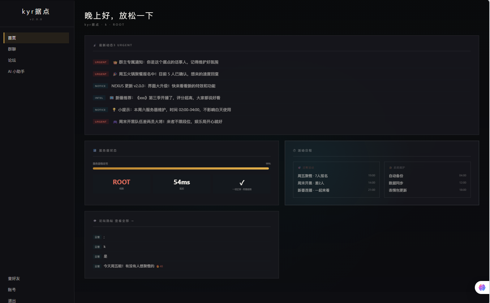
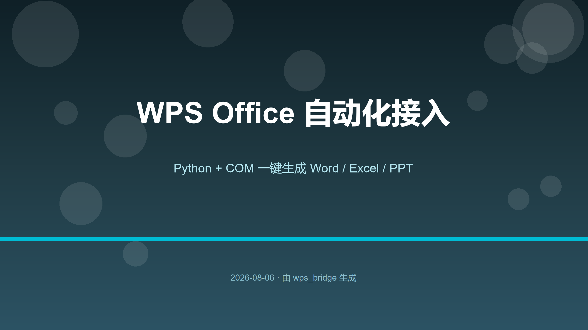
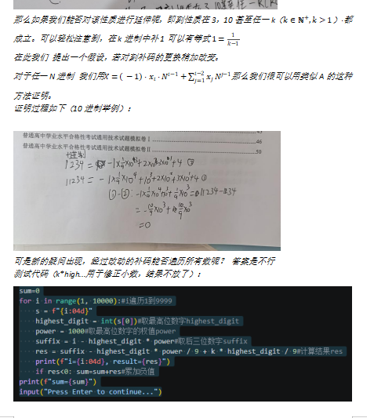
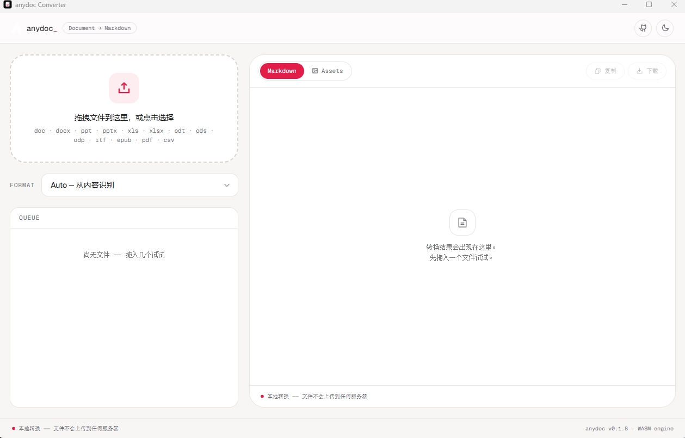

01
角色设定
登场角色

02
技术栈
平时在用的工具
前端 / 全栈
HTMLCSSJavaScript
Node.jsExpresspnpm
GitHub Pages
Python
OpenCV计算机视觉OCR（讯飞）
Office 自动化AI 调用
C# / Unity
开放世界游戏Win32 画面识别
硬件
立创 EDAPCB 设计
自动化 / AI
n8n爬虫自动化脚本AI Agent
神经网络
PyTorchTensorFlow深度学习机器学习
03
我的作品
点到能看详情
kyrrhen.github.io
HTML · CSS · JavaScript
查看详情

kyr据点
一个加密好友据点：论坛、私聊、用户系统，Node.js + Express 全栈，数据用 JSON 落盘。
Node.js · Express
查看详情
AR 视觉输入套件（项目3）
摄像头实时识别指尖，隔空打字 + 手势鼠标，不用碰电脑也能操作。
Python · OpenCV · MediaPipe
查看详情
识别文本
讯飞 OCR 错题卡片流水线：批量识别题目截图，自动归档成 Obsidian 错题本。
Python · OCR
查看详情

WPS 自动化（ll）
pywin32 驱动 WPS COM，自动生成 Word / Excel / PPT 并导出预览图。
Python · COM
查看详情
SkyboundOpenWorld
Unity 2022.3 的小型开放世界单机游戏，昼夜天气、收集品和本地存档。
Unity · C#
查看详情

数学研究
一篇探索笔记：k 进制补码能不能遍历所有整数，含构造和证明。
Math · Note
查看详情

文件转换工具
本地文件格式转换工具，支持常见文档与媒体格式互转。
Tool
查看详情

背单词软件
一个打字背单词网页：中文释义提示、闪卡记忆和间隔复习，内置高考 3000 词库，也支持导入自己的词表。
Web · 打字背单词
查看详情
世界机器人大赛 · 城市小车
世界机器人大赛城市小车项目的测试视频，记录小车在赛道上的运行表现。
机器人 · 测试视频
查看详情